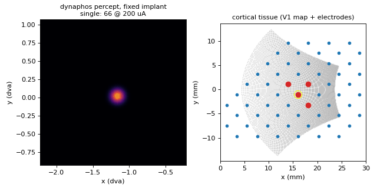
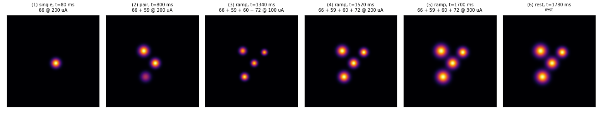
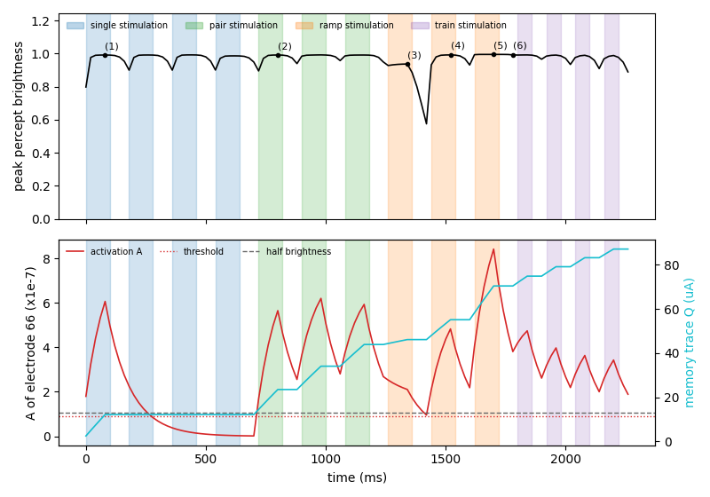

Dynaphos
Home · Getting started · Nomenclature · Models · References
Modality: brain2vision · Tissue: cortical
Paper
Maureen van der Grinten, Jaap de Ruyter van Steveninck, Antonio Lozano, et al. Towards biologically plausible phosphene simulation for the differentiable optimization of visual cortical prostheses. eLife 13, e85812 (2024). doi:10.7554/eLife.85812
Visuotopic map from Polimeni et al. 2006 (doi:10.1016/j.visres.2006.03.006).
What it does
Spatiotemporal cortical phosphene model with per-electrode charge and
activation traces. Predicts brightness that builds and fades over time;
optional co-stimulation leak between nearby electrodes. Action.amp is in µA
(typically 50–300).
Demo walkthrough
Same fixed Orion zone (electrodes 66, 59, 60, 72) and same sequence as the Scoreboard demo. If this is your first demo, read how to read the demos first. The percept panel is zoomed on the zone for the same reason as on the Scoreboard page: near the fovea, cortical magnification makes each phosphene a fraction of a degree wide.

The model in four equations
For each electrode, every 20 ms frame:
-
Effective current. Only current above the rheobase \(I_0 = 23.9\) µA counts, reduced by the memory trace \(Q\), and scaled by the duty cycle (frequency \(f = 300\) Hz times pulse width \(pw = 0.17\) ms):
\[ I_\text{eff} = \max\big(0,\ (I - I_0 - Q)\, f\, pw\big) \] -
Activation \(A\) integrates the effective current and leaks with \(\tau_\text{act} \approx 111\) ms. A phosphene is drawn only while \(A\) is above the threshold \(A_\text{thr}\):
\[ A \leftarrow A + \Big(-\frac{A}{\tau_\text{act}} + 10^{-6}\, I_\text{eff}\Big)\Delta t \] -
Memory trace \(Q\) grows with every pulse and leaks with \(\tau_\text{trace} \approx 33\) minutes, so within the clip it only goes up:
\[ Q \leftarrow Q + \Big(-\frac{Q}{\tau_\text{trace}} + \kappa\, I_\text{eff}\Big)\Delta t \] -
Appearance. Brightness is a steep sigmoid of \(A\), and size comes from the current and the local cortical magnification \(M\) (mm of cortex per degree):
\[ \text{brightness} = \sigma\big(k\,(A - A_{50})\big), \qquad P = \frac{2\sqrt{I/K}}{M} \]
What to look for

- Small, sharp phosphenes that are either on or off. The sigmoid is so steep that once \(A\) is above threshold the brightness is almost 1. This is why frames (1) to (6) all look equally bright, and why the top panel of the timeline below is nearly flat.
- Phosphenes outlive the pulse. In frame (2) a third phosphene is still visible from the previous single pulse, and in frame (6) the whole zone is still lit during the rest.
- More current means bigger phosphenes. Frames (3) to (5): size grows with \(\sqrt{I}\), so going from 100 to 300 µA makes each phosphene about 1.7× wider.
Over time: the hidden state

The top panel (peak brightness) saturates, so the interesting part is the bottom panel: activation \(A\) (red) and memory trace \(Q\) (cyan) of the centre electrode 66.
- Rise and linger. During the first pulse \(A\) climbs to about 6.6 times the threshold. After the pulse stops it decays, but only drops below threshold at 280 ms, about 180 ms after the pulse ended. That is the lingering phosphene.
- Silence while electrode 66 is off. During the other three singles \(A\) keeps decaying toward zero and \(Q\) stays flat: the trace only grows when this electrode is stimulated.
- Habituation is real here. \(Q\) climbs step by step, from 12 µA after the first pulse to 87 µA at the end. Since \(Q\) is subtracted from the current, the same 200 µA gives less and less effective current: across the pulse train the activation peaks fall from 4.75 to 3.43 (× 10⁻⁷). Unlike the Axon map and Scoreboard, this weakening would not go away with longer rests on the time scale of the clip.
- Weak currents can fail. At the 100 µA ramp step, \(Q\) is already about 46 µA, leaving little effective current: \(A\) keeps falling during the pulse, and the peak brightness dips to about 0.58 in the rest that follows.
Regenerate the clip and figures with make demos.
Usage
```python from sentionaut.core.config import Config from sentionaut.core.registry import build_components
cfg = Config(model="dynaphos", implant="orion") implant, topo, model = build_components(cfg) ```
Source: src/sentionaut/models/dynaphos.py